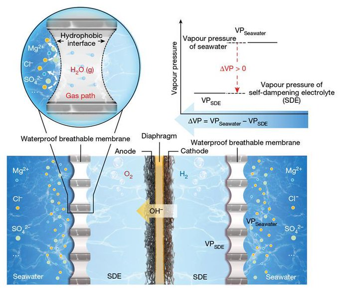

Week 51
Time for a break - see y'all next year bitchez
"Tata Motors revealed plans for hydrogen-powered passenger vehicles on its social media platform. In a post, the Indian brand teased a poster with the words ‘Accelerating Greener Mobility,’ and there is also a Hydrogen fuel tank visible. The brand will exhibit a hydrogen-powered prototype at the upcoming Auto Expo in January 2023" via @jmtixhon@mastodon.world
Politico: "Senate clears $1.7T government funding bill.. The legislation is now on track to reach the House Friday, hours ahead of a shutdown deadline"
WaPo: "No conclusive evidence Russia is behind Nord Stream attack"
Euractiv: "Croatian president to block plans for training Ukrainian troops"
The Guardian: "Brazil’s public services face ‘very real threat of collapse’, says Lula.. President-elect says transition team have found ‘simplest things not being done’ as result of Bolsonaro mismanagement"
Al Jazeera: "Chile plans to open embassy in occupied Palestinian territories"
New YCombinator: "Jack Dorsey will donate $1M per year to The Tor Project"
Middle East Monitor: "Algeria to relaunch pipeline plan to transport gas, hydrogen to Italy, Germany"
"Greek and Phoenician colonies in 550 BC. Almost 2600 years onwards we can still see remains of these settlements"
![[-]](twimg/FklMIdOWQAAcSf3.jpg){kind=link}
MD can scale both ways; either through seperate name groups / blocks, or internally for each block adding extra hardware. Twitter, Facebook can only scale internally, which makes them monolithic, architecturally lacking.
BTW when ppl speak of "adding Mastadon servers" they usually mean a new name, a new URL. But technically speaking that name, that access point could also be scaled internally by adding "more physical server machines", same way netflix.com can be scaled behind the scenes, user is rerouted to a cluster of machines in the background.
"@Polychrome@poly.cybre.city
The bit about a lawyer being stopped from entering a music hall in the US because its facial recognition system picked up that she's part of a law company that's suing them is even crazier than I thought. The law company isn't suing the music hall - it's suing a restaurant, in another state, which is owned by the hall's parent company MSG Entertainment. MSG gone ahead and harvested photos of all the lawyers in the firm and fed it to an image recognition system to ban them from every MSG Entertainment owned location"
Bloomberg: "Africa Could Make €1 Trillion of Green Hydrogen a Year, EIB Says"
MSM still use words like "tycoon", "mogul" to label SBF, they are trying to hide their fuck-ups by continuing to build up SBF when in fact it was a stupid kid who was connected, and a wave of followers rushed into that biz bcz of those connections.
"@hydrogeit@mastodon.green
With the help of the British government, a large factory for the production of components for the #hydrogen and fuel cell market is to be built in England. Johnson Matthey (JM) intends to build such an £80m #Gigafactory at its Royston site"
"@d@waferbaby.com
Friends don't let friends share links with tracking query parameters"
Says org crime came to US because they fled from Mussolini.
"How Mussolini Beat the Italian Mafia"
Sagan quote reminds me of people who are conned into battery-electric technology.
Carl Sagan: "One of the saddest lessons of history is this: If we’ve been bamboozled long enough, we tend to reject any evidence of the bamboozle. We’re no longer interested in finding out the truth. The bamboozle has captured us. It’s simply too painful to acknowledge, even to ourselves, that we’ve been taken"
There is a pic too... Evolution is wild.
{kind=link}
LA Times: In Alaska, wood frogs freeze for seven months, thaw and hop away.. Each September, the wood frogs of Alaska do a very strange thing: They freeze. They do not freeze totally solid, but they do freeze mostly solid. Two-thirds of their body water turns to ice. If you picked them up, they would not move. If you bent one of their legs, it would break.
Inside these frozen frogs other weird physiological things are going on. Their hearts stop beating, their blood no longer flows and their glucose levels sky rocket.
“On an organismal level they are essentially dead,” said Don Larson, a graduate student at the University of Alaska, Fairbanks who studies frogs. “The individual cells are still functioning, but they have no way to communicate with each other.”
The craziest thing of all may be that in this frozen state, they can withstand temperatures as low as zero degrees Fahrenheit for as long as seven months, and then, when spring arrives, thaw out and hop away.
Good info on Qatar history
Al Monitor: "[UAE's] BEEAH Group signed an agreement Tuesday to build the first waste-to-hydrogen power plant in the United Arab Emirates... with the Japanese gas conglomerate Air Water and the British waste-to-fuel technology firm Chinook Sciences. They will work together to develop a facility in Sharjah that will convert waste wood and plastic into hydrogen"
Curated info on compressed H2
IEA: "Oman has largest green hydrogen project pipeline in Middle East region"
Mozilla; big news
"In early 2023, Mozilla will stand up and test a publicly accessible instance in the Fediverse at Mozilla.Social. We’re eager to join the community in growing, experimenting, and learning how we can together solve the technical, experience, and trustworthiness challenges inherent in hyper-scale social systems"
U-oh #WaPo #Mastadon
![[-]](twimg/FkhsLOEXEAUyDUM.jpg){kind=link}
CNN: "Two buses carrying migrants arrived in New York City on Sunday – with at least 10 to 15 more buses expected over the next few days"
US, decrease in personnel, increase in armored vehicles, tanks.
u.gfp_compare('USA','../2021/gfp-2021.csv','gfp-2022.csv')
Out[1]:
% Change Previous
Tot Military Personnel (est.) -18.414607 2245500.0
Reserve Personnel -47.723241 845500.0
Tanks 8.393443 6100.0
Armored Vehicles 12.982500 40000.0
Helicopter Carriers -10.000000 10.0
Patrol Vessels -23.076923 13.0
WHERE IS THE CHOPPA
Increase in tanks and armored vehicles, trainers (obiously), some decrease in aircrafts, helicopters
u.gfp_compare('Germany','../2021/gfp-2021.csv','gfp-2022.csv')
Out[1]:
% Change Previous
Tot Military Personnel (est.) -7.441860 215000.0
Reserve Personnel -50.000000 30000.0
Manpower Composition 12.500000 16.0
Total Aircraft Strength -11.982882 701.0
Transports -40.277778 72.0
Trainers 15.625000 32.0
Tanker Fleet -100.000000 7.0
Helicopters -15.088757 338.0
Tanks 9.016393 244.0
Armored Vehicles 75.228137 5260.0
Frigates 20.000000 10.0
More annual comparisons from Global Firepower Index. Russia - major increases in artillery (no shit), armored vehicles. There was decrease in personnel, I guess soon to be partly reversed according to news.
u.gfp_compare('Russia','../2021/gfp-2021.csv','gfp-2022.csv')
Out[1]:
% Change Previous
Tot Military Personnel (est.) -62.174279 3569000.0
Active Personnel -16.173570 1014000.0
Reserve Personnel -87.500000 2000000.0
Paramilitary -54.954955 555000.0
Trainers 5.454545 495.0
Tanker Fleet 5.263158 19.0
Armored Vehicles 11.151292 27100.0
Towed Artillery 69.563270 4465.0
Rocket Projectors -12.150259 3860.0
Submarines 9.375000 64.0
Patrol Vessels 7.272727 55.0
Clapping.. How am I doing so far?
{kind=link}
No acknowledgement on US/UA's role bringing the conflict to where it is..
UA delegation visit of Washington D.C.? Let me guess - there was a lot of Putin bashing..
CNBC: "Global coal use is on course to hit all-time high this year, IEA says"
First Post: "China gripped by 1st of three predicted COVID waves as a million projected to die in 2023"
Also let's consider the extra burden HPs will bring on the grid - which is a fragile system to begin with. A clean gas pipeline would be much more robust, scalable. Pipes can deliver energy 10 times faster compared to the grid.
"Before.. heat pump went in, we were paying £250 a month in oil.. January had a lot of really icy days and it’s been the longest sustained bout of cold weather we’ve experienced since moving in. Last month, we consumed 2,231 kWh of electricity electricity, just for the air source heat pump, which is a crazy amount at around 72kWh per day"
I see some efficiency numbers for heat pumps that are plain non-sense. I'd look at how much extra is paid after HP is installed, a simple before/after comparison.
Heat pumps cannot power stoves - but H2 piped into homes can provide both heating and help with cooking. Heating is extremely power hungry and work best through molecules, fuels; currently natgas, LPG, hopefully later clean fuels.
CNBC: "Meta could face $11.8 billion fine as EU charges tech giant with breaching antitrust rules"
Politico.eu: "France and Germany push for fast-track subsidies after US row.. French and German economy ministers are urging European Union regulators to let them fast-track subsidies for “key industrial sectors” as they push for more support to companies after a row over a massive U.S. green support package [IRA]"
Clean ammonia can be transported cleanly, 'cracked' to take out hydrogen, and finally ammonia itself can be used in turbines to generate power. What's not to like?
Power Mag: "[2021/3] Mitsubishi Power Developing 100% Ammonia-Capable Gas Turbine.. [MP] is developing a 40-MW class gas turbine that can directly combust 100% ammonia under an initiative that responds to heightened global decarbonization ambitions, as well as Japan’s recent roadmap for ammonia fuel"
H2 Central: "Chevron is among a group of multinational companies looking at the U.S. Gulf Coast as a central hub for the development of hydrogen and ammonia... working with Air Liquide, Lyondell Basell and Uniper to study the potential for a hydrogen and ammonia production facility.. This project would deploy technologies that have potential to capture and sequester CO2 to produce lower carbon intensity hydrogen and ammonia"
AFR Map - Added Western Sahara, Central African Republic, and Tunisia - "a major non-NATO ally". TUN is surely not enjoying the pressure it is getting for their non-democratic turn from US but I put them in the US-friendly list. Western Sahara is in limbo internationally, but RU now sides with it against Morocco (see item 21/2).
Review Online: "[2022/6] President Cyril Ramaphosa attended the launch of the first hydrogen truck in South Africa at the Anglo American Platinum Mine.. earlier today"
I'm glad. Ramaph is a strong H2 supporter
NYT: "Despite a high-profile scandal, [South Africa's] Cyril Ramaphosa was able to secure enough support to stay in control, almost assuring him a second term as the country’s leader after elections scheduled for 2024"
"@JacobAShell
'1990s middle class lifestyle' means 3-bedroom house, 2 cars, annual family road trip holiday, every 5 years overseas holiday, the 2-3 kids go to solid 4-year colleges, something like home roof repairs is financially non-catastrophic. In 2022 I've described a 400K/yr+ household"
That's good move, bad history is probably holding Europe back from engaging more with Africa.
Al Jazeera: "Netherlands apologises for Dutch government’s role in slavery"
Paul Graham in the house
"@paulg@mas.to
Among other things, Mastodon is methadone"
This is a real problem with "AI" -the current reincarnation of neural networks with gazillions of free parameters-.
Paper: "We surmise silent bugs are especially insidious in [deep learning] libraries and applications built on top of them. The primary reason is that DL applications.. belong to the family of 'non-testable program', for which, strictly speaking, oracles do not exist. Moreover, finding such bugs in DL libraries can be very hard and tedious. A DL model developed by a user typically consists of many floating point parameters and operations (up to billions). Even with a few bugs, the model may still be created, trained, and appeared to work... While there are various explanations for an unexpected behaviour that need to be ruled out, the worst is the fact that the faulty computation is not explicitly developed by the user, but implicitly produced by the library. However, little information can be obtained from the DL model’s internal mechanism and training/inference due to the 'black-box' and stochastic nature of DL training/inference. Hence, any bugs in DL libraries may lead to bugs in the user’s program that the user might not, easily, become aware of"
Reuters: "Germany's Gascade, Ontras and terranets have agreed to convert high-pressure gas pipelines to transport low-carbon hydrogen from the Baltic Sea all the way the south of the country by 2025, the companies said on Thursday... The plan, dubbed "Flow - making hydrogen happen" aims to convert existing high-pressure gas pipelines with feed-in capacity of up to 20 gigawatt (GW), offering the equivalent of the power capacity of 20 nuclear plants"
HTGR nuclear plants (see Japan, RU) don't have to be near the sea; they are helium cooled.
New Statesman: "If key financial investors don’t take up the remaining 60 per cent of construction costs, the planned Sizewell C [nuclear] plant in Suffolk is going nowhere. The omens aren’t good. Recently Sir Nigel Wilson, group CEO of Legal & General, one of the UK’s largest real assets firms, told BBC Radio Four: 'We are not big fans of Sizewell C.'.. King, the UK’s former chief scientific adviser and a long-standing nuclear supporter, told LBC that the plant would be 'very difficult to protect from flooding' due to rising sea levels on the Suffolk coast"
Collated info on solar radiation falling on Earth, how much, where

The National News: "Saudi Arabia's Neom signs agreements with banks to finance green hydrogen project... The kingdom is building the world’s largest green hydrogen-based ammonia production plant in the planned futuristic city.. The project, set to come on stream in 2026, is expected to produce about 1.2 million tonnes of green ammonia per year"
"@mmasnick@mastodon.social
I received an email pitching 'managed Mastodon hosting.' So, apparently someone's realizing there's a market there..."
BBC: "Rishi Sunak orders audit of Ukraine war progress, source says.. The source said the audit, known as a data-driven assessment, is designed to assess the progress of the war and the significance of the UK's military contributions to Ukraine. The source said: 'This is about looking at what we have put in, what we have got out.'"
"@EU_Commission@social.network.europa.eu
We may never be able to match the incredible achievements of #JohnMastodon, but the European Union still plays its part!
We are proud funders of Mastodon through the Next Generation Internet initiative (@EC_NGI).
Open,
Interoperable,
Decentralised,
Trust based"
New user rate is "down" to 1500/hr?
via @mastodonmigration@mastodon.online
Blue whale is lower left
{kind=link}
The adventures, horrors depicted in some nature-adventure, monster whatnot movies are a throwback to an era when the nature dwarfed humans. Not the case anymore. The giant 30 meter whale would be conceptually more terrifying when humanity didn't have 300+ meter 100K ton aircraft carrier.
An entire sea is disappearing. Modern world can do that now.
"Formerly the fourth largest lake in the world with an area of 68,000 km2 (26,300 sq mi), the Aral Sea began shrinking in the 1960s after the rivers that fed it were diverted by Soviet irrigation projects"
![[-]](twimg/FkCtQp7XwAAL1Ec.jpg){kind=link}
Jane's Defence: "Indian Air Force (IAF) combat jets have been scrambled several times in the last few weeks in the country's northeastern borders in response to growing tensions with China, a defence source confirmed"
Why the rise? The "shitshow" in Libya opened the floodgates (Kaddafi died 2011), about the same time Syrian civil war started, later we saw the rise of IS, jihadi mofos everywhere went rabid, some in Africa no doubt.
The CEIP article below seems to downplay the rise of terror attacks in Africa btw 2012-2016, according to GTD counts went "from 114 attacks and 1,944 fatalities in 2006, to 2,051 attacks and 13,182 fatalities in 2016". I checked GTD (all incidents, all deaths, monthly, ends 2020-06), there is a spike. I'd call the increases significant. Since 2016 numbers went down now they are lower. See post.
I really wanted Russia part of this clean fuel transition; before the war Putin told visiting Italian businessman on clean ammonia that RU could be number one exporter of the stuff; then everything went to shit. Pity.
H2 Central: "Gasgrid – Six [European] partners have signed a cooperation agreement to develop Nordic – Baltic Hydrogen corridor"
Passenger rail in the US vs Europe via @henrihorn@mastodon.energy
![[-]](twimg/FkV9hUVXoAAnBa-.jpg){kind=link}
TFI Global: "Greek shipping companies have devised a smart plan to evade European sanctions. From the Russian port of Kavkaz which lies on the north of the Black Sea, Greek ships have loaded oil from the Russian ships. The move effectively camouflaged Russian oil. Greece ships were also engaged in ship-to-ship transfers. Greece has earned billions of dollars of revenue from this exercise"
H2 View: "Fortescue Future Industries (FFI) signed a framework agreement with the Ministry of Energy of the Republic of Azerbaijan to jointly explore up to 12GW of renewable energy and green hydrogen projects"
That would be a salt-cavern fyi; apparently the area is rich with such formations
The Guardian: "The energy company SSE has begun work to develop an underground cavern in east Yorkshire to store hydrogen, aiming to stockpile the renewable source of power for when the freezing, windless conditions experienced in the last week occur in future.
The project will produce hydrogen using renewable energy in a 35-megawatt electrolyser which will be stored in a cavern the size of St Paul’s Cathedral located a mile deep at an existing SSE site in Aldbrough on the Yorkshire coast"
via @Noevanhulst@mastodon.social
Most of the Snyderverse actors were great picks; Momoa, Cavill; maybe they'll be back in some form some day - JM wants to be a bad guy? Cavill too, a future, or different version of the character.. DC has massive cannon, creates options.
"I usually find the English language painfully boring, but then I found out someone invented a term for 'fear of palindromes' and it's... aibohphobia"
via @PaulKirschner@mastodon.online
Chemistry World: "A combined desalination–electrolysis system that can produce green hydrogen directly from seawater has been developed by a team in China... Following successful laboratory trials, the team were keen to demonstrate the practicality of this approach at scale and installed a demo device in Shenzhen Bay. The compact unit ran for an initial test period of 133 days producing over a million litres of hydrogen without any evident corrosion of the catalyst or increase in impurities"

A whole day of radio in US, 1939
Messi finally has his World championship. Great. That first penalty was a bit iffy but, hey, still a world class team; excellent work.
The Herald: "Ministers have unveiled a plan to help Scotland become a world leader in hydrogen production which they say could generate up to £25 billion a year and provide more than 300,000 jobs.
The blueprint, published yesterday, sets out the sets they will take to help meet the target of producing a sixth of the country's power needs from hydrogen by 2030, some 5 Gigawatts.
A further goal is to produce 25 Gigawatts of hydrogen by 2045 - the year the Scottish Government want the county to be net zero"
Smart how they compared different items on a multivariable plot; each variable is a corner, better/worse numeric values bring you further or closer to the center, you want the best item to be on the outside, a connected ring envoloping all the others in that web, (clearly DBT in this plot).
Comparison of different LOHC base compounts, via @hydrogenLOHC
Yellow: Toluene
Orange: NEC (N-ethyl carbazole)
Blue: DBT (dibenzyl toluene)
![[-]](lohc-compare.jpeg){kind=link}
Pretz - Red Light For Go #music
Compressed H2 is ok for short trips that can be made frequently due to max capacity, it looks suitable for eg Oz-Japan not as much for SA-Japan. I made some calcs below for 40 trips / year and a fleet of 20 ships, using 250 bar H2 having 700 kwh/m3,
capacity = 120000 #m3
print ("Single ship %0.1f MW" % ((ship * 700) / (365*24*1e3)))
ann_trips = 40
print ("Fleet capacity %0.1f GW" % ((20 * ann_trips * capacity * 700) / (365*24*1e6)))
Single ship 9.6 MW
Fleet capacity 7.7 GW
H2 Central: "Provaris Energy Obtains World First Design Approval For Compressed Hydrogen Carrier From [American Bureau of Shipping]"
I wonder if RU, CH also support this measure who gets the chit?
That is welcome. Germany needs a seat too, Asia Minor (have to push for the homie), and Latin America.
VOA Africa: "Biden expressed support for Africa's bid, among others, to have a permanent seat on the United Nations Security Council"
Blood Father, wonderfully done, great story. Almost all roles had the perfect actor playing it.
"@GutoOwenH2
The true test of an energy system is not the easy stuff but the worst-case scenario. Resilience being the 1ary metric. The Herculean efforts of the grid engineers is a failure of the system. And the Pathé News-style spin would be laughable, if it was not so serious. It's 2022"
"@DickWinchester
This must be nearly a week now and yet there are still some who insist electrification is the way forward when we know hydrogen can work so much better for people"
The grid, electric lines even look bad, crooked..
BBC: "Still 1,600 Shetland properties without power.. Some homes on the west side of Shetland's mainland may not have power back until Monday.. About 150 engineers are now battling snow and ice to rebuild Shetland's overhead power lines and reconnect properties to the network"
H2 Central: "[EU] Deal Reached on New Carbon Leakage Pricing Instrument to Raise Global Climate Ambition, Scope Includes Hydrogen"
Energy.gov: "Biden-Harris Administration Announces $750 Million To Accelerate Clean Hydrogen Technologies"